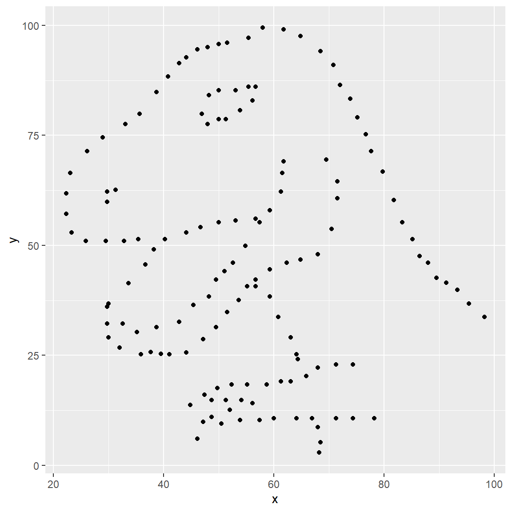
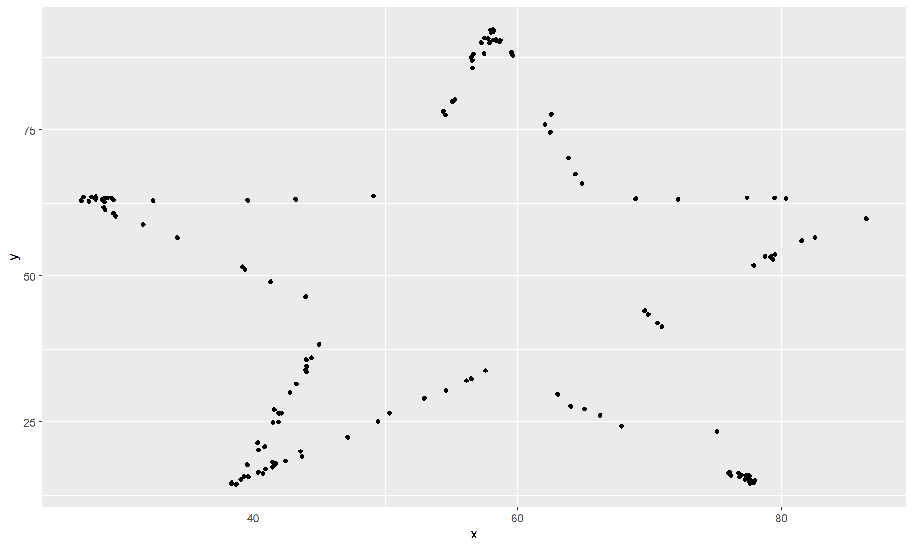
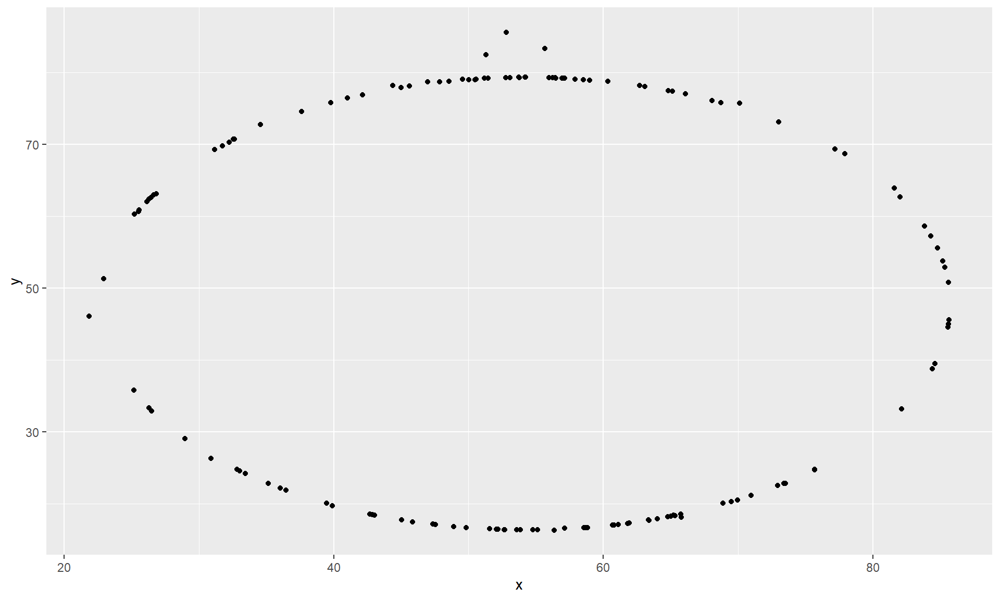

datasaurus_dozen file have? What are the variables
included in the data frame?
The dataset contains \(1846\) rows and \(3\) columns. The variables are x-values and
y-values and data set.
y vs. x for the dino
dataset. Then, calculate the correlation coefficient between
x and y for this dataset.
We pipe and filter the appropriate dataset and assign it to a variable.
dino_data = datasaurus_dozen %>%
filter(dataset == "dino")We plot the data as a scatter point plot
ggplot(data = dino_data, mapping = aes(x = x, y = y)) +
geom_point()
Using the following chunk of code we calculate the correlation coefficient, \(r_{d}\), to be \(-0.0645\)
dino_data %>%
summarize(r = cor(x, y))
y vs. x for the star
dataset. You can (and should) reuse code we introduced above, just
replace the dataset name with the desired dataset. Then, calculate the
correlation coefficient between x and y for
this dataset. How does this value compare to the r of
dino?
We answer this similarly to the question above by simply changing datasets.
star_data = datasaurus_dozen %>%
filter(dataset == "star")ggplot(data = star_data, mapping = aes(x = x, y = y)) +
geom_point()
we calculate the correlation coefficient , \(r_{s}\), to be \(-0.0645\). This is similar to \(r_{d}\) in the sense that data does not correlate very well since they are both close to \(0\). The negative symbol indicates that they increase/decrease in opposite directions.
y vs. x for the
circle dataset. You can (and should) reuse code we
introduced above, just replace the dataset name with the desired
dataset. Then, calculate the correlation coefficient between
x and y for this dataset. How does this value
compare to the r of dino?
We apply the same methods as in the previous exercises.
circle_data = datasaurus_dozen %>%
filter(dataset == "circle")ggplot(data = circle_data, mapping = aes(x = x, y = y)) +
geom_point()
dino_data %>%
summarize(r = cor(x, y))
We get the following correlation coefficient, \(r_{c}\) to be \(-0.0683\). This is similar to \(r_{s}\) and \(r_{d}\) since the data does not correlate very well in the 3 datasets.
ggplot(datasaurus_dozen, aes(x = x, y = y, color = dataset))+
geom_point()+
facet_wrap(~ dataset, ncol = 3) +
theme(legend.position = "none")And we can use the group_by function to generate all the
summary correlation coefficients.
datasaurus_dozen %>%
group_by(dataset) %>%
summarize(r = cor(x, y)) %>%
print(13)You’re done with the data analysis exercises, but we’d like you to do two more things:
I purposely removed the print command to display the whole table
I changed the global figure sizes and customized the dino figure to be slightly smaller. I also changed the theme.